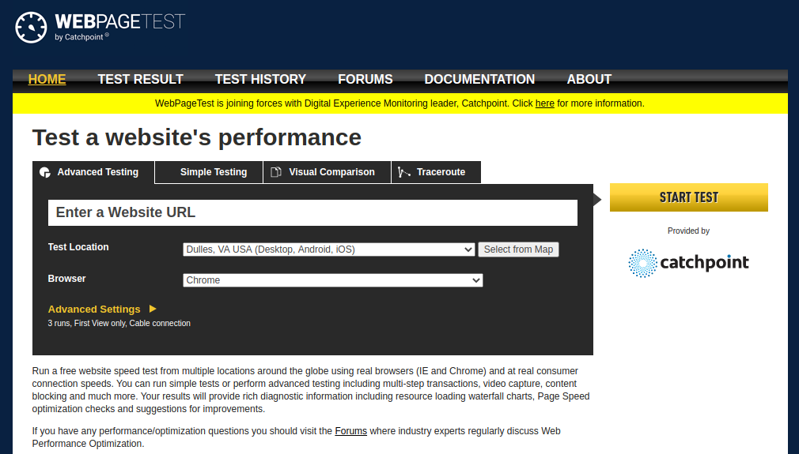
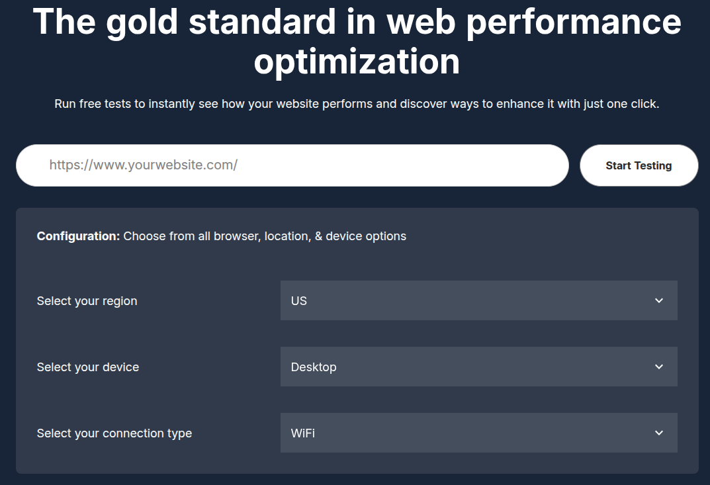
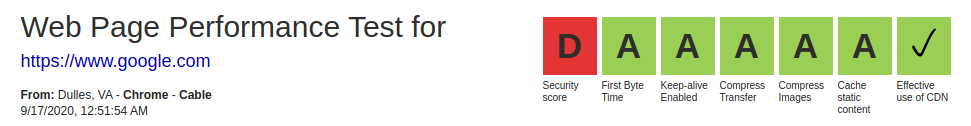
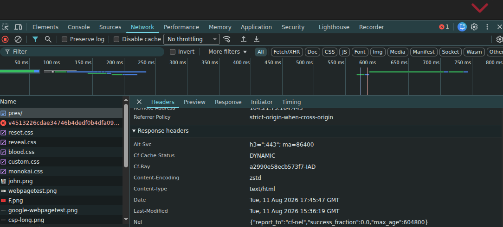
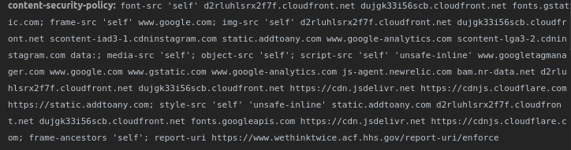

Drupal GovCon 2026
www.drupal-csp.net/pres/
Use arrow keys to move slides



mail.google.com got an A+ though.
Judge your security posture by the needs of your site.
PII?
Finance?
Litle bits of information about the response you received from the server.
How do you see them?

$ curl -I https://www.drupal-csp.net/pres/
HTTP/2 200
date: Tue, 11 Aug 2026 17:49:51 GMT
content-type: text/html
...
A response header that tells the browser to always connect to that domain over HTTPS.
strict-transport-security:
max-age=31536000; includeSubDomains; preloaduse https://hstspreload.org/ for validation and to register for preloading.
In Drupal, the Security Kit module can do it. You can also set the header directly in PHP, or (better) at the web server / CDN layer.
Avoid slip when adding redirects
Once a site sends HSTS, if you ever let the certificate expire, no one will be able to reach the site.
A policy that defines the acceptable sources a page is allowed to load resources from.
Defines what sources can be used on a web page.
content-security-policy: default-src 'self';From here you add domains, nonces, hashes, protocols, and other options.
A restrictive connect-src could have blocked the POSTs to the attacker's domain.
Hacking is automated now — someone may just want to install a cryptominer. No site is too small.
For details, see the CSP Quick Reference Guide and MDN.
Browsers apply the most specific matching directive. If the specific one is absent, they fall back to the more general one.
For a script attribute, the browser checks:
script-src-attr → script-src → default-src
The first directive present wins.
Sources are not merged.
No directive in the chain? CSP does not restrict that resource type.
frame-src → child-src → default-src
content-security-policy:
child-src 'self' td.doubleclick.net;
frame-src 'self';The DoubleClick iframe is blocked.
frame-src exists, so the browser stops there. Fix it by putting the exception in frame-src.
default-src isn't universalIt is a fallback for fetched resources, not every CSP rule.
default-src 'self';
form-action 'self';
base-uri 'self';
frame-ancestors 'self';Set the last three explicitly. Without form-action, an injected form may still submit off-site.
Spec: default-src
object-src 'none'<object> and <embed> can execute scripts.
script-src does not govern them.
object-src 'none';There's a module for that.
Always enable default-src as a fallback…
…which is not on by default in the Drupal CSP module. Turn it on.
Lets you see what would be blocked, without blocking it.
content-security-policy-report-only: default-src 'self';Your best friend for rolling CSP out incrementally.
'unsafe-inline'content-security-policy: script-src 'self' 'unsafe-inline';Allows inline scripts/styles. i.e. anything inside a <script> tag, or "onclick" handler.
Weak — but still better than no CSP at all as a starting point.
content-security-policy: script-src 'sha256-B2yPHKaXnvFWtRChIbabYmUBFZdVfKKXHbWtWidDVF8='Allow-list a specific inline script or style by the base64-encoded SHA hash of its contents.
Note: adding any hash or nonce to script-src makes the browser ignore 'unsafe-inline' (a feature, not a bug).
Plain hashes (and nonces) only apply to elements — <script> / <style> blocks.
They do not cover inline event handlers (onclick=) or inline style="" attributes…
'unsafe-hashes'content-security-policy: script-src 'unsafe-hashes' 'sha256-...';The CSP Level 3 keyword that lets a hash match an inline event handler or style attribute — the gap from the previous slide.
Still "unsafe" (less so than 'unsafe-inline'). The better fix is to remove inline handlers/attribute styles entirely.
<script nonce="ABC123">…</script>content-security-policy: script-src 'nonce-ABC123'Allow-list inline code by an arbitrary, server-generated string. Generate a fresh nonce on every request.
MDN: script-srcA nonce that never changes is just a password the attacker can read — it defeats the purpose.

…and easy to get wrong. (I forgot to set default-src here.)
Browser support for newer CSP features still varies.
Granular directive support is now broad, but not universal.
A weak CSP (lots of 'unsafe-inline' / wildcards) can still let attacks through —
<div style="background-image: url('...')">
CSP blocks that inline style attribute unless you allow 'unsafe-inline' (or a matching hash with 'unsafe-hashes').
By hand is unsustainable. A real CSP needs to be dynamic (fresh nonces, per-page sources). That's the challenge — and why you want a module.
Use the CSP module — it builds the policy dynamically and integrates with Drupal's asset system.
Prefer it over Security Kit for CSP specifically.
Reporting-Endpoints and report-to.csp.settings*.libraries.ymlPOLICY_ALTER Event Subscriber#attached↓
Live CSP response header
Only the first source appears in exported config.
$ curl -Is https://www.drupal-csp.net/ | grep -i content-security-policy
content-security-policy: default-src 'self'; font-src 'self' fonts.googleapis.com fonts.gstatic.com; frame-src 'self' www.youtube.com w.soundcloud.com; img-src 'self' data: pbs.twimg.com static.addtoany.com; script-src 'self' static.addtoany.com; style-src 'self' fonts.googleapis.com fonts.gstatic.com static.addtoany.com; frame-ancestors 'self'
Contrib authors: POLICY_ALTER is how your module should declare its own CSP needs.
curl shows you two policies…Both are enforced. The effective policy is their intersection, not their union — a resource must be allowed by every policy in force.
*Can happen if your CDN and Drupal both set a CSP.
Keep each source with the code that needs it.
*.libraries.yml — external library URLsPOLICY_ALTER subscriber — global or conditional changes#attached['csp'] / csp_hash — per render elementAltering a site's policy — drupal.org
class EventsCspSubscriber implements EventSubscriberInterface {
public static function getSubscribedEvents(): array {
return [CspEvents::POLICY_ALTER => 'onPolicyAlter'];
}
public function onPolicyAlter(PolicyAlterEvent $event): void {
// ABC-123: the events calendar embeds Eventbrite widgets.
// Owned by Marketing. Remove when the calendar is retired.
$event->getPolicy()->fallbackAwareAppendIfEnabled(
'script-src', 'https://www.eventbrite.com'
);
}
}A host added in the admin UI is an undocumented string in a YAML file. Six months later nobody knows what it's for — and nobody dares delete it.
The same host added here is in version control, next to the reason, reviewed in a pull request, and deployed with the code that needs it.
It also can't drift. There's no active-config copy to diverge from config/sync.
fallbackAwareAppendIfEnabled()The safe default for adding a source.
$policy->fallbackAwareAppendIfEnabled(
'script-src', 'https://www.eventbrite.com'
);appendDirective() — append directly; create the directive if needed.setDirective() — replace the directive outright.isReportOnly() — distinguish the enforced and report-only policy events.Themes use hook_csp_policy_alter(). Modules should subscribe to CspEvents::POLICY_ALTER.
$element['#attached']['csp']['img-src'] = ['https://cdn.example.com'];
// For inline code you genuinely can't remove:
$element['#attached']['csp_hash']['script-src-elem'] = [
$hash => [Csp::POLICY_UNSAFE_INLINE, 'https://cdn.example.com'],
];The source travels with the render element, so it's only in the policy on pages that actually use it — and it leaves the policy when the component does.
This is also the module-native answer to "I have inline JS I can't remove," alongside Attach Inline.
Google documents the loader and the destinations required by each tag family.
img-src, connect-src, and frame-src destinations your tags use.google_tag 2.0.9 adds Google hosts to img-src and connect-src — but not everything GTM can load.
For now: manually add every destination loaded by your GTM container to the appropriate CSP directive.
Google Tag issue #3203811 — the patch needs testing; hopefully a release soon.
GTM can change what your site loads without a Drupal deployment.
Google Ads tag → ad.doubleclick.net → blocked by connect-srcNo PR. No deploy. No notice.
Google documents the required hosts now — but the container can still change underneath your policy.
drupal/csp alone → report-uri
drupal/csp + drupal/reporting
→ report-to + report-uri
report-uri is deprecated
The Reporting API module ia the new standard.
reporting-endpoints: csp-endpoint="https://example.com/report"
content-security-policy:
default-src 'self';
report-to csp-endpoint;
report-uri https://example.com/report;Everything is allowed. Nothing is blocked or reported.
Apply default-src 'self' without blocking anything. Violations still appear in the console.
Enforce the same policy. External and inline content now breaks.
'unsafe-inline'Restore inline scripts and styles broadly—and see why this shortcut weakens the policy.
Allow only inline blocks whose exact contents match a listed hash.
Compare nonce-tagged code with untagged inline code that remains blocked.
Send report-only violations through both report-to and report-uri.
child-src fallbackNo frame-src: iframes fall back to child-src and load.
Add frame-src 'self': fallback stops, so the same third-party iframes are blocked.
The advanced demo — each case changes one directive against the same baseline.
default-src 'self'script-src can't seeHow many "ums"?